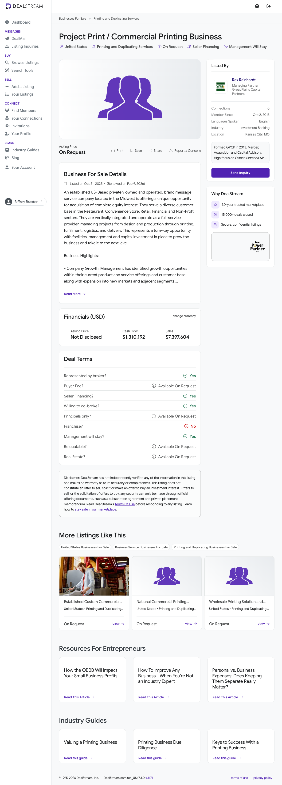

Listing says "established" but discloses no founding year or SOS registration date.
4
3+ yrs YoY revenue & profit growth
INSUFFICIENT DATA
No per-year (2024/2025) revenue or profit split disclosed — trend not verifiable.
5
Asking price ≤ 4.0x EBITDA
INSUFFICIENT DATA
Asking price "Not Disclosed / On Request" — valuation multiple not computable.
6
DSCR > 1.4 (informational)
INSUFFICIENT DATA
No asking price and no debt structure — DSCR not computable. Not scored.
Overall Buy Box: FAIL — 2 of 6 confirmed PASS; 4 are insufficient data. This is a data verdict, not a fundamentals verdict — both confirmable criteria pass cleanly, the business is in an explicit target industry, and the margin is healthy. A broker CIM resolving founding year, the 3-year trend, and asking price could move this materially.
Scorecard (26 fields)
#
Field
Value
Source
1
Business Name
Project Print / Commercial Printing Business (anonymized broker listing)
Not disclosed ("facilities in place"; owned vs leased unknown)
DealStream listing
5
FF&E value
Not disclosed ("capital investment in place")
DealStream listing
6
Full-time employees
~37 (est.)
Revenue/employee benchmark — see Appendix C
7
Part-time employees
Not disclosed
—
8
Contractors / 1099
Not disclosed
—
9
Business address
United States, Midwest (broker Kansas City, MO; Central Plains focus)
DealStream; greatplainscp.com
10
Revenue 2022
Not disclosed
—
11
Revenue 2023
Not disclosed
—
12
Revenue 2024
$7,397,604 (TTM/recent; year unspecified)
DealStream listing
13
Revenue 2025
Not disclosed
—
14
Net / FCF 2022
Not disclosed
—
15
Net / FCF 2023
Not disclosed
—
16
Net / FCF 2024
$1,310,192 (broker cash flow; year unspecified)
DealStream listing
17
Net / FCF 2025
Not disclosed
—
18
Asking price
Not Disclosed / On Request
DealStream listing
19
% revenue growth YoY
Not computable — no multi-year revenue disclosed
computed
20
Yearly revenue retention
Not disclosed
—
21
EBITDA margin
17.7% ($1,310,192 ÷ $7,397,604)
computed
22
Customer LTV
not disclosed
—
23
Customer CAC
not disclosed
—
24
Client concentration
Not disclosed ("diverse customer base" across 5 sectors)
DealStream listing
25
2024 financials + YTD link
Not available — request CIM from broker
—
26
Lead Score
45 / 100
computed
Score Breakdown
Item
Awarded
Max
Justification
Industry match
20
20
Commercial printing is an explicit EarnedOut target industry (NAICS 323111). Vertically integrated print + fulfillment fits squarely.
EBITDA tier (non-cumulative)
5
15
Cash flow $1.31M → ">$1M" tier = 5 pts. Below the $2M and $3M tiers.
Years in business ≥10
0
10
"Established" stated but no founding year/SOS date — insufficient data, not awarded.
3 yrs consistent growth
0
10
No per-year revenue or profit split disclosed — insufficient data, not awarded.
Recurring revenue
5
10
Diverse B2B base implies repeat ordering, but no contracts/MRR disclosed — mixed = 5 pts.
Customer concentration <20%
0
5
Concentration not disclosed — insufficient data, not awarded. Seller financing offered would soften a >20% finding.
Employees ≥10
10
10
~37 FTE (est.) from revenue/employee benchmark — clears 10 comfortably.
Valuation multiple
0
15
Asking price undisclosed — multiple not computable, insufficient data, not awarded.
Low owner dependence
5
5
"Management will stay" — turnkey with management in place; second-tier management runs day-to-day.
Total
45
100
Depressed by 40 unawarded "insufficient data" points, not by negative findings.
Interpretation: 45 falls in the "<50 — Pass, unless something strategic is in play" band. A broker CIM could plausibly lift this into the 70s. Disposition: Maybe Later — re-evaluate on CIM receipt.
1. Executive Summary
Company overview: A US-based, privately owned, vertically integrated commercial printing and brand-message company in the Midwest, managing projects end-to-end — design, production, printing, fulfillment, logistics, delivery — for Restaurant, Convenience Store, Retail, Financial, and Non-Profit customers.
Buy Box summary: FAIL — 2 of 6 confirmed; 4 are insufficient data (years, 3-year growth, valuation, DSCR). A data gap, not a fundamentals problem.
Why pursue (or not): For — explicit target industry, ~17.7% margin, management staying, seller financing offered, vertically integrated. Against — asking price undisclosed, no founding year, no multi-year trend. Net: request the CIM; do not advance until years-in-business, the 3-year trend, and asking price are in hand.
2. Company Overview
An established, privately owned US commercial printing company positioned as a "brand-message service" — a managed-services provider that owns the full project lifecycle from creative design through physical delivery, rather than a commodity press operation. Founding year is not disclosed in the public listing. Privately owned; entity type and ownership percentages not disclosed (anonymized broker listing).
Timeline: Company established (year not disclosed) · Listed on DealStream Oct 21, 2025 by Great Plains Capital Partners · Listing renewed Feb 9, 2026 (remained unsold ~3.5 months — a mild signal of pricing/process friction or a deliberately slow, NDA-gated process). The listing describes a "turnkey opportunity with facilities, management and capital investment in place," indicating a functioning management layer below ownership.

3. Principals & Leadership
The target is an anonymized broker listing — owner and management names are withheld pending NDA. The only named principal is the sell-side advisor.
Rex Reinhardt — Managing Partner, Great Plains Capital Partners (sell-side broker)
Sell-side M&A advisor representing the seller. ~25-year career as a venture capitalist and investment banker; has led companies through IPOs and directed numerous M&A transactions. Prior roles at Red Beetle Fire and Safety, Valgard Capital, ABMI Mergers & Acquisitions, and UMB Bank. Great Plains Capital Partners is an M&A advisory firm headquartered in Kansas City, MO (satellite offices Oklahoma City, OK and Great Bend, KS), focused on lower-middle-market Central Plains companies under ~$10M EBITDA.
Contact: r***@greatplainscp.com (ZoomInfo, gated) · greatplainscp.com · Kansas City, MO. Seller / owner-operator profile to be obtained from the CIM after NDA.
4. Products & Services
Full-service, vertically integrated commercial printing. The company manages projects from design and prepress, through production and printing, into fulfillment, logistics, and final delivery. It positions itself as a "brand-message service" — selling managed marketing-collateral programs (signage, in-store materials, direct mail, point-of-purchase) rather than one-off press runs.
Pricing model: Not disclosed; commercial print of this type is typically project/job-based quoting with repeat program work. Differentiators: vertical integration (owning fulfillment, logistics, delivery raises switching costs versus commodity printers); multi-sector diversification across five verticals; design-led "brand-message" managed-program positioning; capital investment and facilities already in place (turnkey for a buyer).
5. Market Analysis
Industry size and trends: The global commercial printing market is ~$594B in 2026, growing ~3.45% CAGR to ~$704B by 2031 (Mordor Intelligence). Mature/low-growth overall, but value is migrating toward packaging (~46% of the market, ~4.5% growth) and short-run, variable-data, fulfillment-integrated work. Generic long-run offset is in structural decline; managed programs with fulfillment/logistics are the resilient segment — where this target sits.
Peer benchmarks: Commodity commercial printers transact ~3.0x–3.9x EBITDA on thin (~5% EBIT) margins; well-performing diversified printers 4x–6x EBITDA; specialty/large-format/fulfillment-integrated printers 7x+ when highly profitable and tech-enabled. This target's ~17.7% margin and fulfillment integration place it above the commodity tier and toward the upper half of the peer set.
6. Customers & Revenue Model
Segments: B2B across five named verticals — Restaurant, Convenience Store, Retail, Financial, Non-Profit — a deliberately diversified base. Retention: not disclosed. Recurring vs one-time: not disclosed; the "diverse customer base" and program-oriented "brand-message" positioning imply meaningful repeat business, but no contracted/recurring revenue (MRR, multi-year agreements) is stated — scored as "mixed" pending confirmation. Top customer concentration: not disclosed; the "diverse customer base" claim is a positive qualitative signal but cannot substitute for a hard top-customer percentage, which must come from the CIM.
7. Financial Analysis
Year
Revenue
EBITDA
Margin
YoY
2022
Not disclosed
Not disclosed
—
—
2023
Not disclosed
Not disclosed
—
—
2024 (TTM/recent)
$7,397,604
$1,310,192
17.7%
Not computable
2025
Not disclosed
Not disclosed
—
—
The listing reports a single revenue figure and a single cash-flow figure with no year label and no multi-year history. No revenue trend, profit trend, or growth rate can be established from the public listing.
Revenue trajectory
Estimated valuation
Implied multiple at ask: not computable — asking price is "Not Disclosed / On Request." Industry comps: commodity printers ~3.0x–3.9x; well-performing diversified printers 4x–6x; specialty/fulfillment-integrated 7x+. At Biffrey's 4.0x ceiling, a fair entry on $1.31M cash flow is ~$5.24M; the 5.5x negotiation-tolerance ceiling implies ~$7.21M. Given the margin and vertical integration the seller may anchor toward 5x–6x — which would require negotiation back to ≤4.0x as a closing condition.
Expand fulfillment/logistics attach across existing accounts; cross-sell programs.
Tuck-in roll-up of regional commodity printers onto this platform.
Short-run / variable-data and packaging-adjacent work for higher gross margin.
Seller financing offered — supports an LBO structure.
Threats
Continued migration of marketing spend to digital channels.
Input-cost inflation compressing print margins.
Customer concentration unknown — a hidden anchor account is a risk until disclosed.
Listing renewed after ~3.5 months unsold — possible pricing friction.
9. Risk Factors
Industry: Mature industry under a long-term print-to-digital secular decline; value concentrating in packaging and short-run/variable-data work. Paper/ink/substrate cost volatility compresses margins; press equipment is capital-intensive.
Financial: Customer concentration undisclosed — a single large Restaurant/Retail account could be a material hidden risk. Only one year of financials available; the business could be flat or declining and read identically.
Operational: Management said to stay (lowers key-person risk) — but ownership's actual day-to-day involvement must be confirmed. Press maintenance/replacement capex timing and skilled-labor availability are watch items.
Regulatory / legal: EPA permits for ink/solvent (VOC) emissions and OSHA exposure typical of print operations; confirm permits are current and no environmental liabilities attach to the facility.
Deal conditions: Obtain asking price and negotiate the implied multiple to ≤4.0x EBITDA as a closing condition; verify founding year/SOS registration for the 10-year criterion; confirm the 3-year revenue AND profit trend before any offer; obtain top-customer concentration (seller financing partially mitigates a >20% finding).
10. Outlook & Growth Opportunities
Expansion: geographic growth within the Central Plains; deepen wallet share by attaching more fulfillment/logistics scope to existing print accounts; add adjacent verticals (healthcare, hospitality). Operational upside: install EOS/process discipline; modernize toward digital inkjet and variable-data workflows (industry-leading ~4% CAGR segment); pricing review on managed programs; sales-force build-out to convert project buyers into standing-program clients. Strategic: a credible platform for a print roll-up — a profitable, vertically integrated, multi-sector base onto which regional commodity printers could be tucked in for cost synergy and cross-sell.
100-day plan sketch: (1) Obtain CIM; lock down founding year, 3-year financials, asking price. (2) Confirm top-customer concentration and recurring-revenue mix. (3) Verify press fleet condition, capex schedule, EPA/OSHA permits. (4) Confirm management-continuity terms and any manager equity/profit-share. (5) Model an LBO using the offered seller financing; negotiate the multiple to ≤4.0x.
11. Appendix
A. Data sources
dealstream.com/d/biz-sale/print-shops/cxc6up — primary listing cxc6up (revenue, cash flow, customer sectors, services, broker). Page is authentication-gated (HTTP 403 to anonymous fetch); listing facts used as supplied in the lead packet extracted from the live listing on 2026-05-21.
greatplainscp.com — Great Plains Capital Partners firm site; broker profile, geographic focus.
ibisworld.com — NAICS 323111 classification reference.
B. Assumptions
Broker-stated "cash flow" of $1,310,192 treated as an SDE/EBITDA proxy (standard for DealStream lower-middle-market listings). Buyers should reconcile to true EBITDA via the CIM add-back schedule.
Revenue-per-employee for NAICS 323111 commercial printing taken at ~$200,000/employee (mid-range industry benchmark) — used only to estimate headcount, not financials.
Single disclosed revenue figure assigned to the "2024" row for layout only — the listing does not label the year.
C. Estimation calculations
Field #6 — Full-time employees — Estimated at ~37 FTE (est.).
Method: $7,397,604 sales ÷ ~$200,000 revenue/employee benchmark (NAICS 323111) = 36.99 ≈ 37 FTE. Above the 10-FTE floor even under a conservative benchmark (at $250K/employee, ~30 FTE).
Sources: NAICS 323111 industry benchmark — ibisworld.com; secure.icfo.pro/industry-metrics/naics/32311-printing.
Field #21 — EBITDA margin — Computed at 17.7% (not an estimate).
Method: $1,310,192 ÷ $7,397,604 = 0.1771 = 17.7%.
Sources: DealStream listing cxc6up.
D. Documents reviewed
output/reports/cxc6up/cxc6up.png — screenshot of the DealStream listing captured 2026-05-21. Confirms headline figures, customer sectors, broker, listing/renewal dates.
No CIM, P&L, tax returns, or balance sheet were provided. All financials limited to the two headline figures in the public listing.
E. Open questions for the seller / broker
What is the asking price? (Required to compute the valuation multiple and DSCR.)
What year was the company founded / first registered with the Secretary of State?
Provide 3 years of revenue AND profit (2022–2024) plus 2025 YTD.
Largest customer as % of revenue, and top-5 concentration?
What share of revenue is contracted/recurring vs one-time project work?
Is the real estate owned or leased? If owned, included in the sale and at what value?